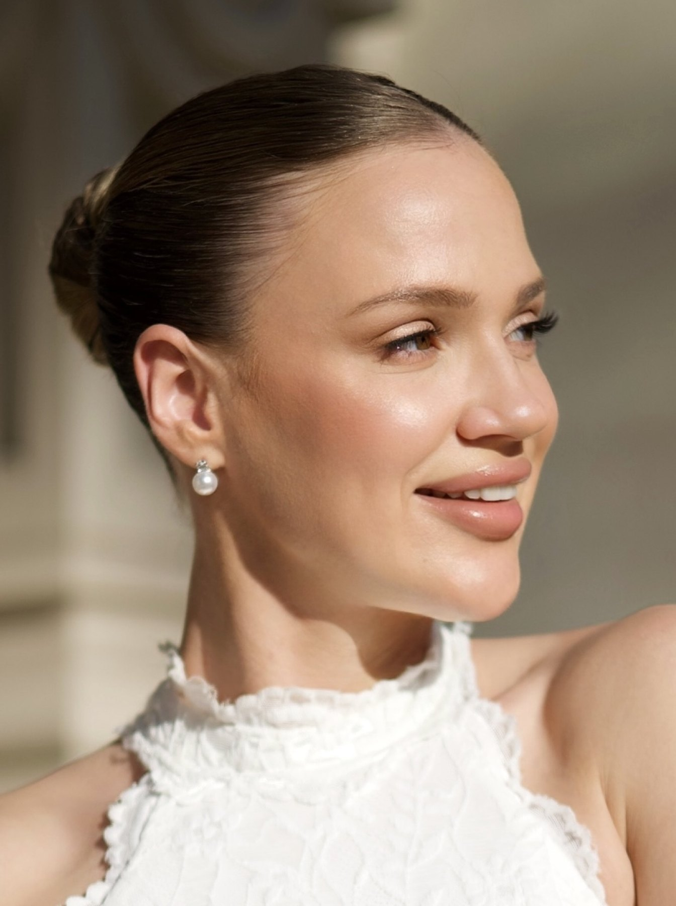
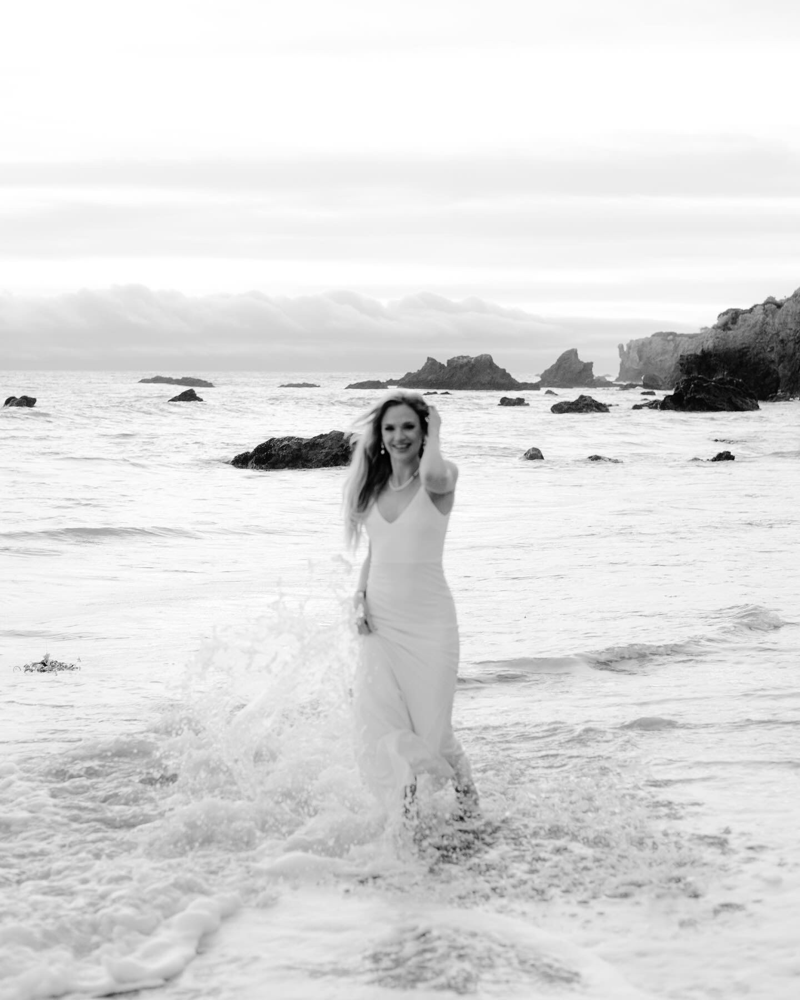
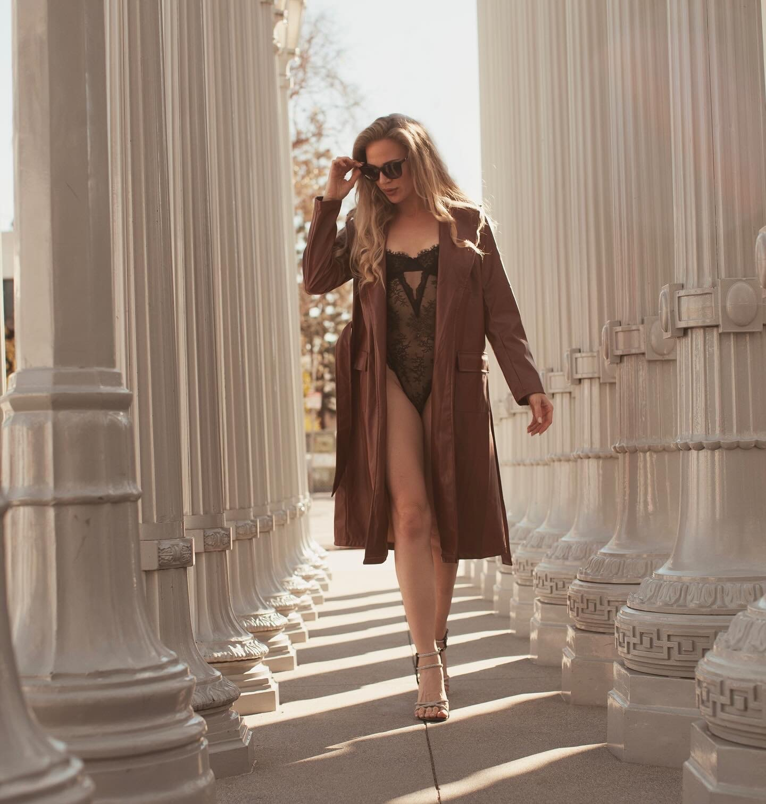
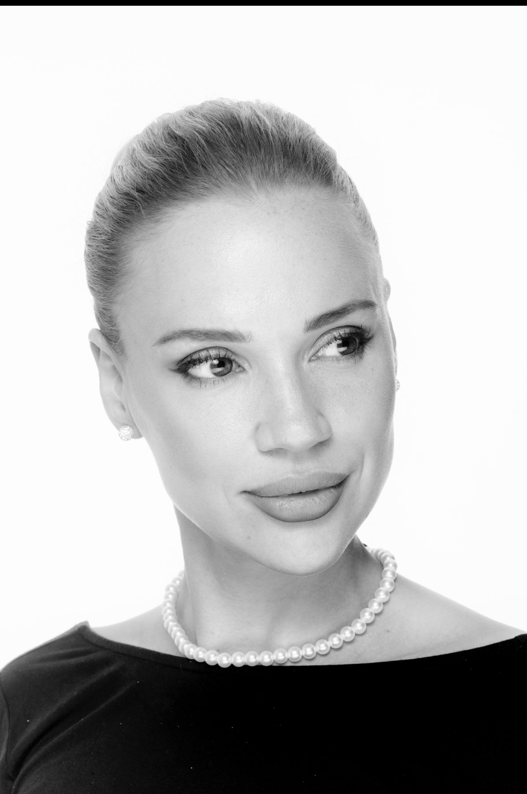
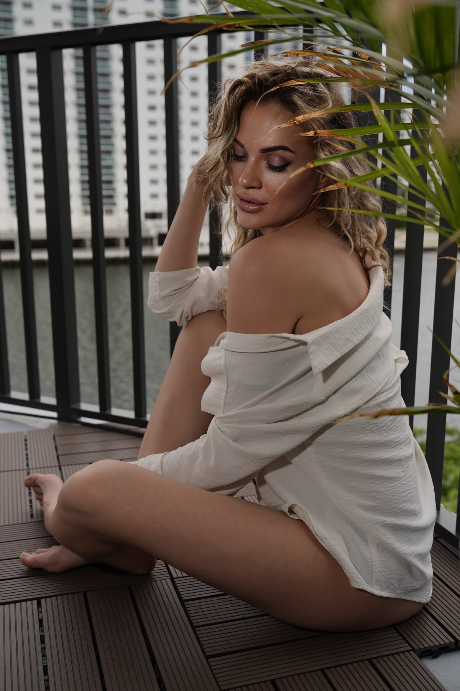

Julia Vaganova
Bridal & Elegance
Portfolio Category
Bridal & elegance.
This edit pulls the softer, more refined side of Julia’s book: bridal beauty, white styling, polished romance, and cleaner occasion-driven imagery.




